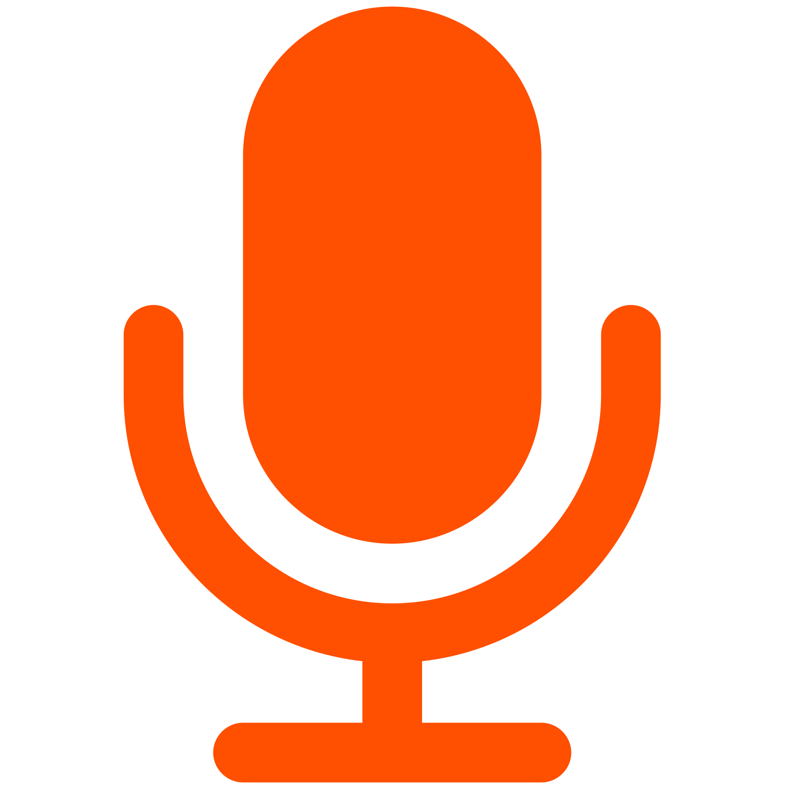

This favicon was created with inkscape. With a size of 600px x 600px. The page was exported as png @ 300dpi. The favicons were generated @ realfavicongenerator.net
After careful comparison of both implementations. I could not tell a difference between the 90dpi & 300dpi.
